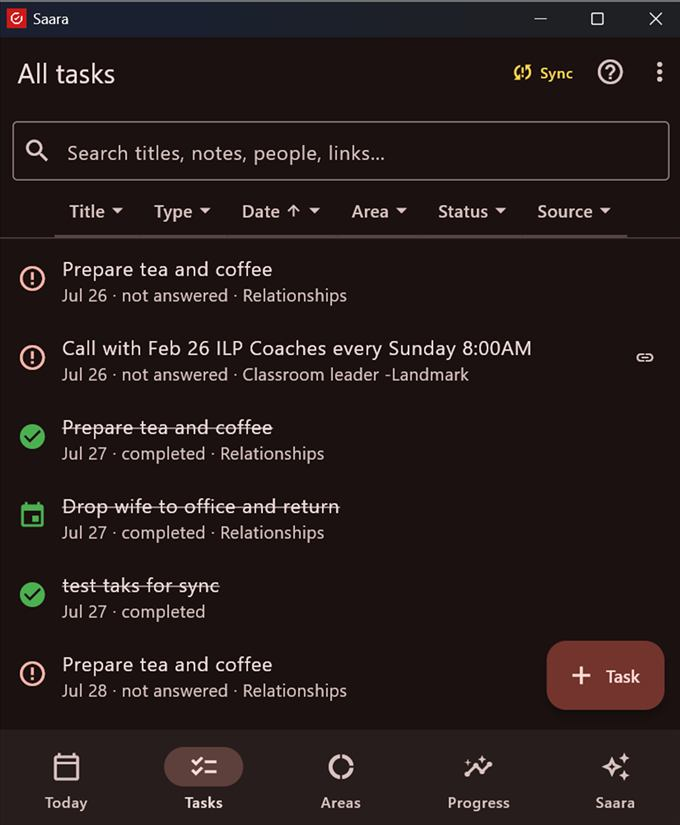
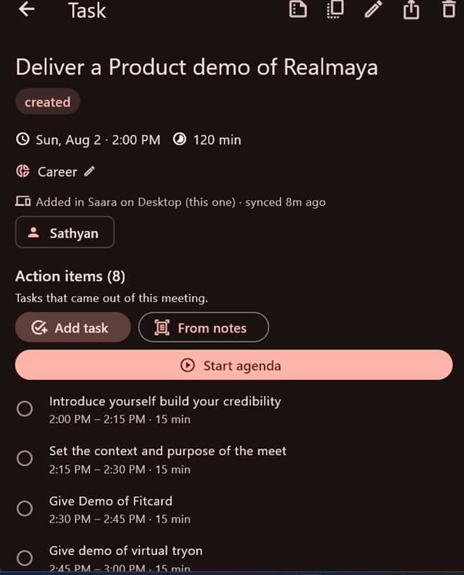

A commitment holds its full context — so nothing lives only in your head. And an event isn't one checkbox; it's a sequence you perform.
What a task or event holds
When — date + time. No date? It waits in an Unscheduled section on Today until you give it a time.
Duration — chips 15 / 30 / 45 / 60 / 90 / 120 min, or Set end… for an explicit end (can cross midnight).
Location — a venue/address. Turn on Notify me when I arrive for an on-the-spot reminder.
Meeting / join link — paste a Zoom/Teams/Meet link, or for a Google event tap Generate Google Meet link (added on the next sync).
Repeat — Once / Daily / Mon–Fri / Mon–Sat / Weekly / Monthly, or specific weekdays, with an optional end date.
Area, people, reminder, notes, attachments — tag it, add participants (Call/WhatsApp them later), a 15-min heads-up, notes, and a document link or image.
Open any task to see a live timer while it runs, its provenance ("Added in Saara / From Google · synced 8m ago"), and a full History (integrity ledger) — every step recorded, never rewritten.

All tasks — search titles, notes, people and links; filter by type, date, area, status, source.
Run an event live — the agenda
On an event, the Action items section lets you build a run-of-show and execute it hands-free:
Add task — give each step a title, start time and duration. New items pre-fill to the end of the last, so they chain back-to-back ("2:00–2:15 · 15 min").
From notes — photograph your agenda notes; AI turns each line into a timed item.
Start agenda — the runner: the current step auto-starts, a big timer counts down (turns red when you run over), your speaker notes show, and Up next previews the next step. Tap Complete & next as you go.

An event fanned into 8 timed action items, ready to run with Start agenda.
At the end you get an Event report (completed X of Y, planned-vs-actual timing, optional AI insights). Duplicate to another date clones the whole run-of-show to a new day.
Keeping — and breaking — your word
Every released commitment ends in an honest disposition:
Action
Meaning
Score
Mark complete
You kept it.
Kept +1
Reschedule
Move it and re-commit.
Not counted
Cancel
Backing out of your own released word.
Broken
No longer happening
An external cancellation (the other side dropped it).
Excluded
Missed (evening review)
A no-show.
Broken
Rejected / Declined
You said no, clearly.
Excluded
Saara never marks a miss on its own. A commitment whose time has passed reads "not answered" until you give it a disposition — usually in the evening review ("Complete your day"). Saying "no" is a complete, honest answer; only silence is the failure. Marked something by mistake? Reopen puts it back — and that's recorded too.